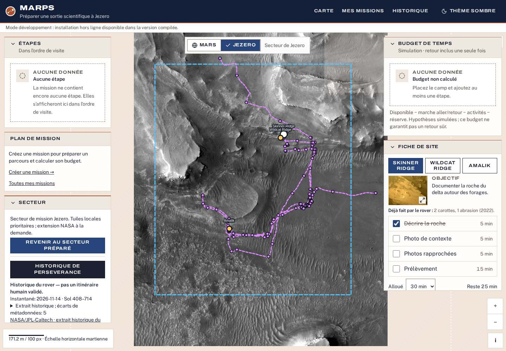
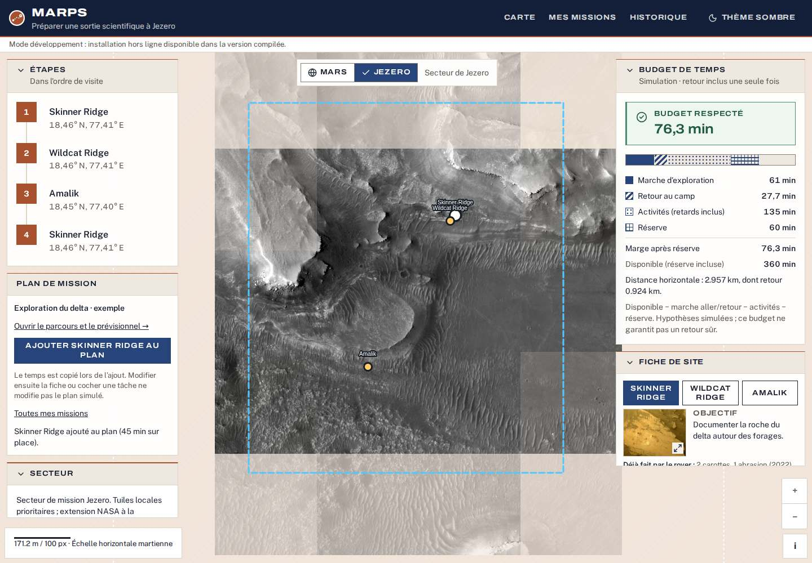
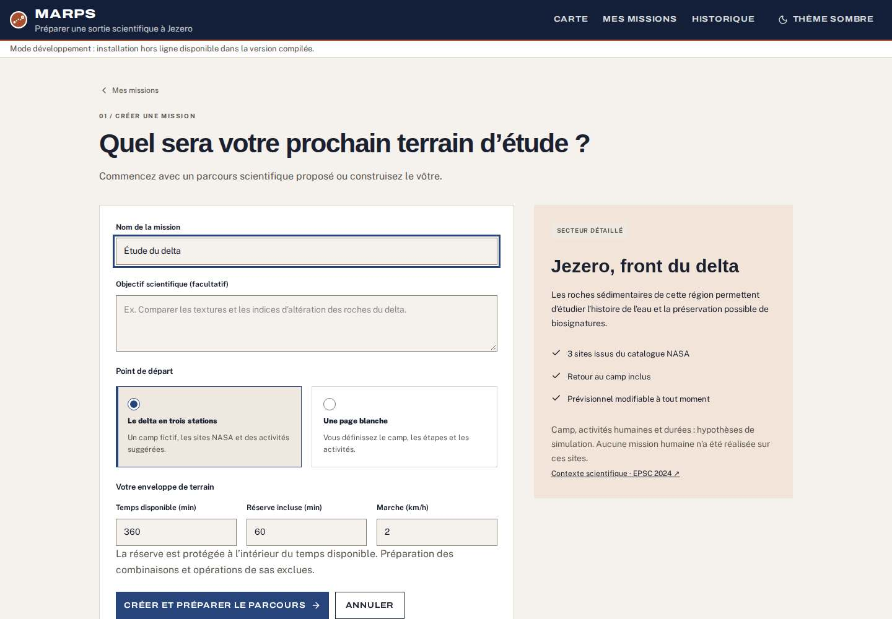
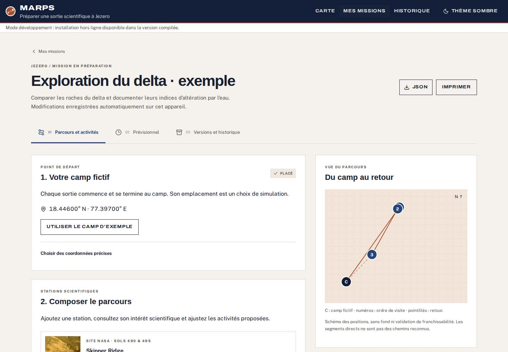
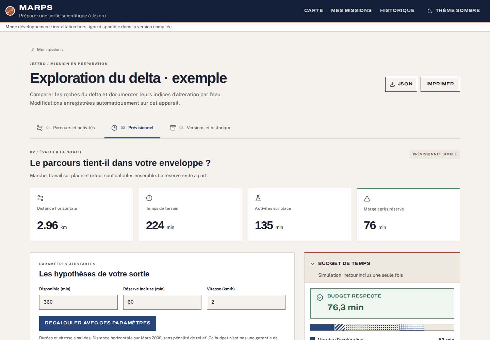
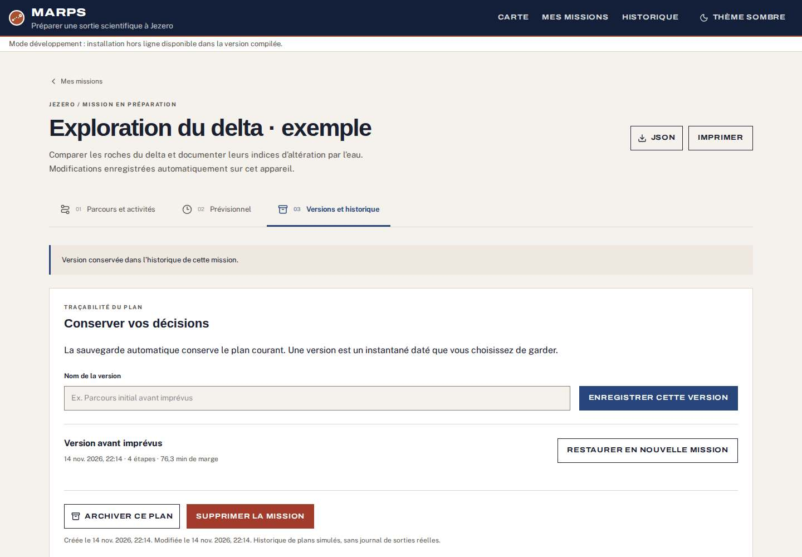

| Ticket | Livré et vérifié | Limite ou suite proposée |
|---|---|---|
| #11 Modèle | Camp fictif, visites ordonnées, activités, validations et état partagé.Ajout depuis une fiche : temps alloué copié au plan. | Placement par coordonnées/exemple. Relier l’édition cartographique à #12. |
| #13 Distances | Géométrie martienne, exploration, retour et total.Rayon du manifeste, mètres et kilomètres explicites. | Segments directs horizontaux ; pas de chemin praticable garanti. |
| #14 Budget | Marche + activités + retour, réserve protégée et marge.Le budget reste visible indépendamment de la vue de la carte. | Vitesse constante, sans pénalité de relief. |
| #18 Sauvegarde | Plans multiples, migration, versions datées et archives. | Stockage sur cet appareil. Prévoir un export complet de bibliothèque. |
| #19 Événements | Retards et ralentissements, cumul et annulation testés. | Événements simulés. Prochaine étape : les localiser sur la carte. |
| #25 Export | JSON et fiche imprimable du plan courant.Paramètres, événements, références et résultats inclus. | Les révisions ne sont pas exportées comme dossier complet. |
| #32 O₂ | Moteur optionnel et versionné, bilan stock/réserve, terrain plat explicite. | Intégration partielle. Brancher les pentes du profil #15 ; coefficients non calibrés. |
Propositions de présentation non intégrées. Les calculs illustrés reprennent l’exemple exporté : quatre visites, dont une ajoutée depuis la fiche avec 45 min allouées.
| Camp → Skinner Ridge | Marche |
| 1 · Skinner Ridge | 30 min |
| 2 · Wildcat Ridge | 30 min |
| 3 · Amalik | 30 min |
| 4 · Skinner Ridge | 45 min |
| Retour au camp | Inclus |
Comparer les roches du delta et leurs indices d’altération.
Marche 88,7 min + activités 135 min + réserve 60 min.
Enveloppe disponible : 360 min.
Marge : 76,3 min.
Format compact : comparer les durées sans quitter le contexte cartographique.